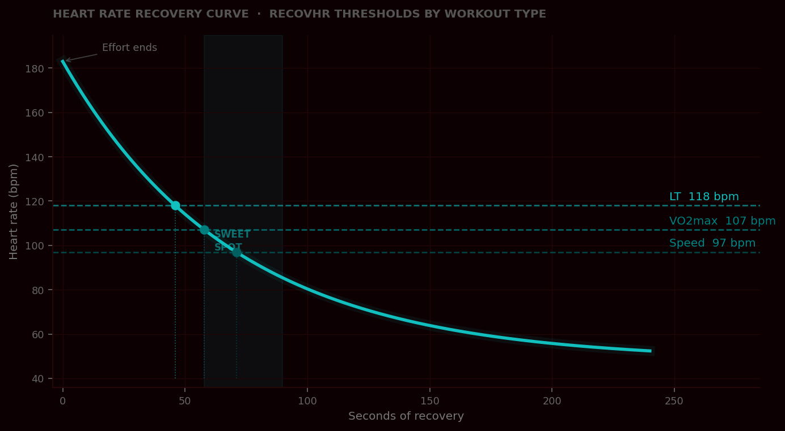
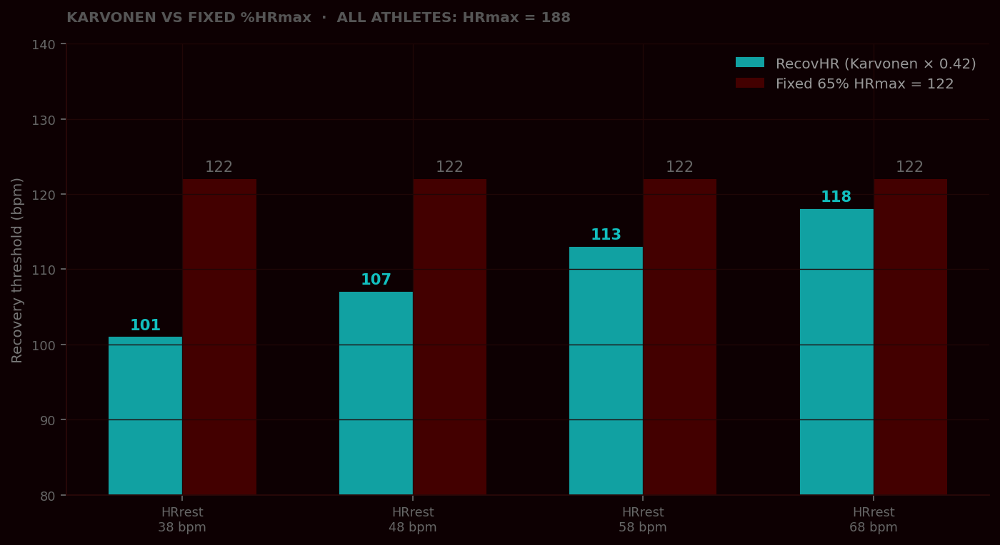
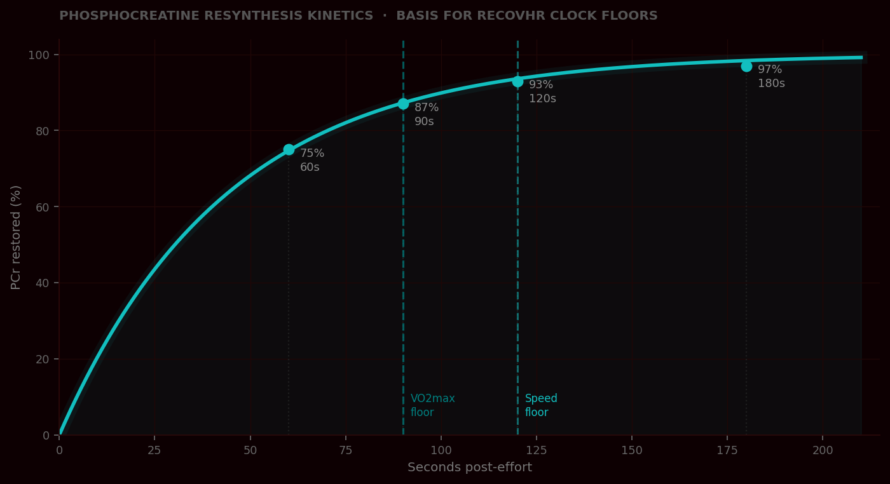
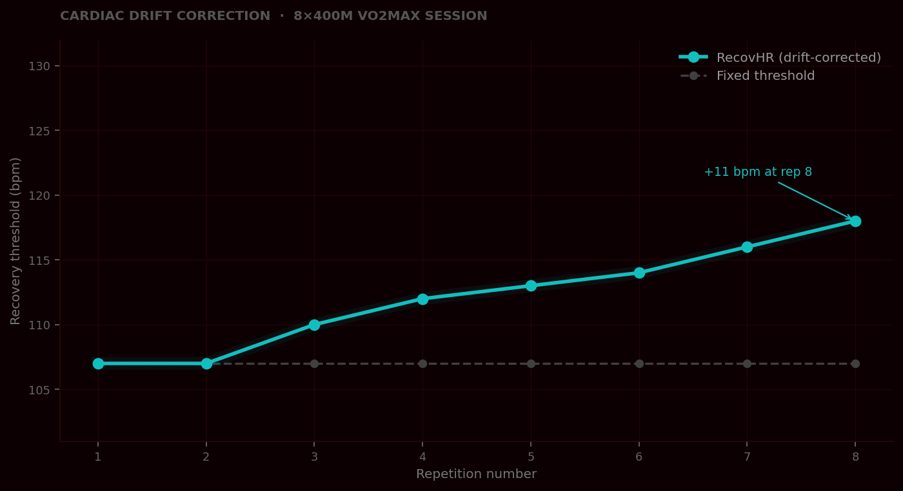

PCr only ~50% restored. Session quality collapses by rep 4.
45–75s wasted re-ramping to target intensity per rep.
Each workout type produces distinct physiological stress. RecovHR applies different HRR fractions so recovery matches the actual demand.
| Rep | Base | Drift | Start when HR ≤ | Min rest |
|---|---|---|---|---|
| 1 | 107 | — | 107 | 90s |
| 2 | 107 | — | 107 | 90s |
| 3 | 107 | +3.0 | 110 | 90s |
| 4 | 107 | +4.5 | 112 | 90s |
| 5 | 107 | +6.0 | 113 | 90s |
| 6 | 107 | +7.5 | 115 | 90s |
| 7 | 107 | +9.0 | 116 | 90s |
| 8 | 107 | +10.5 | 118 | 90s |

RecovHR targets the exact zone where HR has dropped enough to go hard again — without losing the training stimulus from incomplete rest.

Two athletes, same HRmax — but resting HR differs by 30 bpm. Karvonen corrects for that. A fixed %HRmax ignores it entirely.

No matter how fast HR drops, the fuel must be physically ready. Clock floors enforce the PCr resynthesis timeline.

A fixed threshold gets harder to meet as the session progresses. RecovHR adjusts each rep to match actual cardiac drift.
Every parameter — HRR fraction, drift constant, clock floor — has a named source. No proprietary data. No black box.